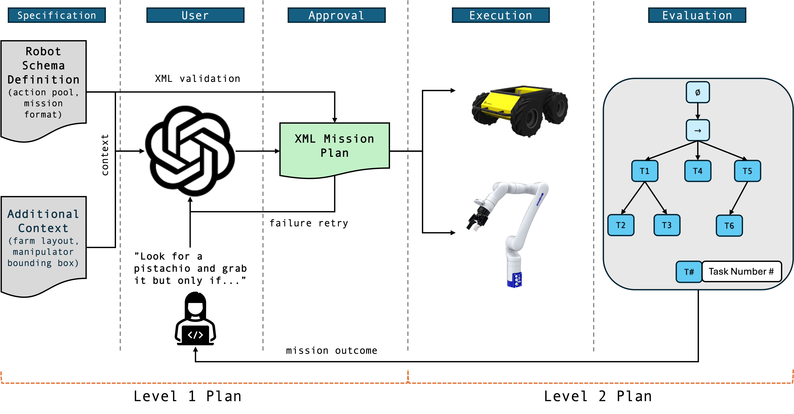
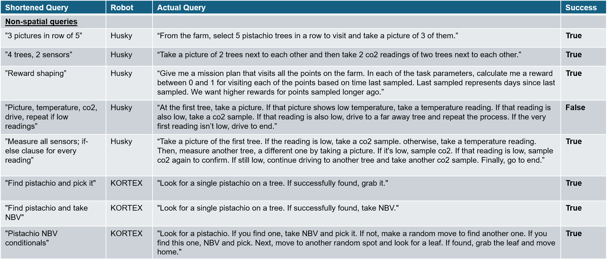
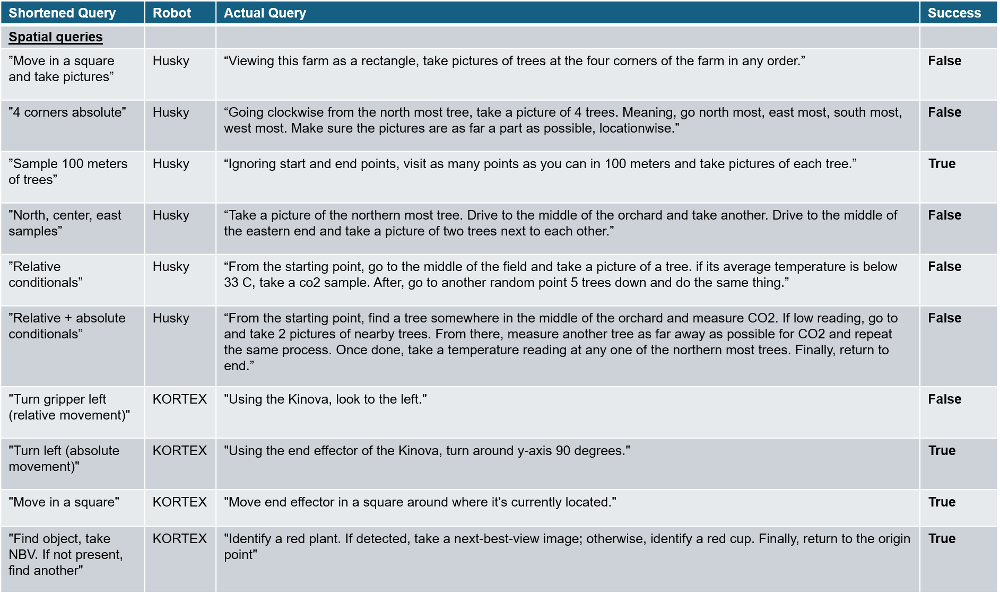

Resources
Abstract
Artificial intelligence is transforming precision agriculture by making robotic mission planning accessible to non-technical users. This paper presents an LLM-powered mission planner capable of generating robot task plans for both mobile robots and robotic arms using a standardized XML schema. Our approach ensures robust mission execution in environments with limited connectivity, emphasizing one-shot planning over continuous replanning.
System Architecture
Overview of the LLM-integrated mission planning system.
Mission Queries
Non-spatial mission prompts used in experiments.
Spatial mission prompts used in experiments.
Results & Demonstrations
The system supports both mobile robots and manipulators, enabling seamless mission execution.